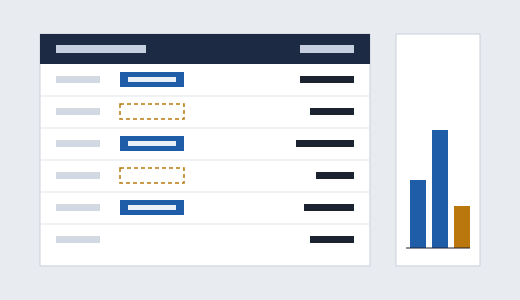

Tiền vào có truy được về từng em không?
Hệ thống đọc sao kê ngân hàng Quỹ tự công bố, tách mã NE khỏi nội dung chuyển khoản, chia số tiền về từng mã và giữ nhật ký có thể phát hiện sửa đổi.

Đối soát: các phần phải bằng tổng
——
Độ phủ: bao nhiêu tiền vào gắn được mã?
——
Tra cứu
Hàng đợi ngoại lệ
—Ngoại lệ được gộp theo nhóm kèm số lượng và giá trị, không phải mỗi dòng một cảnh báo. Một hàng đợi 200.000 dòng là một kiểm soát không hoạt động được.
Nhật ký kiểm toán
—Ứng dụng chặn sửa/xoá thông thường; mỗi sự kiện còn lưu hash của sự kiện trước để phát hiện thay đổi trái phép. Đây là tamper-evident, không phải bất biến tuyệt đối trước người sở hữu toàn quyền cơ sở dữ liệu.